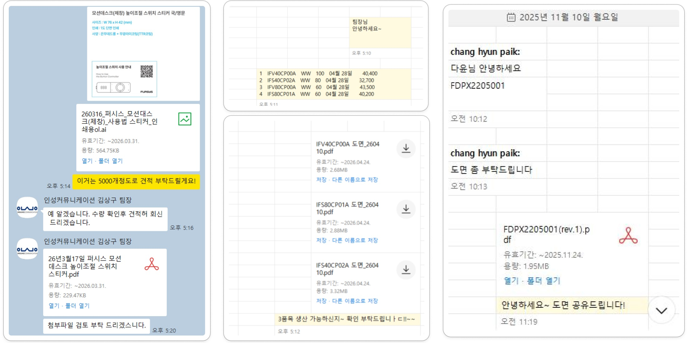
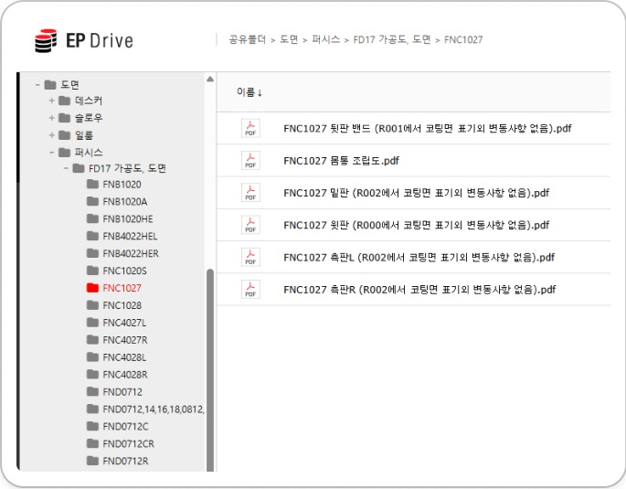

레거시 시스템 전수 조사
10년 된 PDM 레거시 (Spring 3.2 + JSP + PDFBox 1.8.2)를 처음 만났습니다. 4개 DB, 3개 시스템의 연동 구조를 파악하고, AI 협업 환경(Claude MCP + Figma MCP + sqlcmd)을 구축했습니다.
Spring 3.2JDK 1.8PDFBoxMSSQLClaude MCP
10년 된 PDM 레거시 (Spring 3.2 + JSP + PDFBox 1.8.2)를 처음 만났습니다. 4개 DB, 3개 시스템의 연동 구조를 파악하고, AI 협업 환경(Claude MCP + Figma MCP + sqlcmd)을 구축했습니다.
7명의 현업 담당자를 직접 만나 업무 흐름을 추적했습니다. "보안을 위해 막았지만 보안이 전혀 안 되는" 역설을 발견하고, 백도어 3곳(카톡, EP-DRIVE, 메일)을 식별했습니다. NPDM에 이미 배포 기능이 있지만 아무도 사용하지 않는다는 사실도 이때 발견했습니다.
4대 기술 과제를 검증하고, ERP+PDM+NPDM 3개 시스템을 연동하는 합본 출력 POC를 구현했습니다. NPDM 연동은 해당 팀 협의 없이 AES256 암호화 이식으로 자체 해결했습니다. 200건(400페이지) 합본이 0.7초에 완료되는 것을 실측으로 확인하고, 팀장 기술개발검토를 통과했습니다.
ERP PPC0300에 [부품규격표+도면 출력] 신규 버튼을 개발하고, 특정 사용자만 접근 가능하도록 권한 제어를 구현했습니다. POC 코드를 프로덕션 수준으로 정리하고, 도메인 분기, 통합 테스트를 거쳐 운영 배포했습니다.
충주공장 현장에 시스템을 적용하고, EP-DRIVE 도면 폴더의 모든 권한을 회수한 뒤 삭제했습니다. 가공라인에 도면 배포를 신규 적용하여 기존에 skip되던 QC 업무의 커버리지를 확대했습니다.
외주 협력업체 도면 배포를 카톡/메일에서 NPDM 배포시스템으로 전환했습니다. 구매팀, 생산팀, 제품기술팀 대상으로 NPDM 사용 교육을 진행하고, 카톡 우회 경로를 억제했습니다.
일반 사용자의 PDM 직접 접속 권한을 회수하고, 도면 서비스를 NPDM(외부)과 ERP(내부)로 이관했습니다. 현장 로컬 PC에 저장된 도면 파일을 단계적으로 삭제하고, 워터마크 기반 출력 이력 모니터링 체계를 구축했습니다.
PDM, NPDM, ERP, EP-DRIVE를 오가며 도면을 수집해야 합니다. 한 건의 도면 배포에 4개 시스템 접속이 필요합니다.
4개 부서의 도면 요청이 제품기술팀 2명에게 집중됩니다. 주문품 1명, 표준품 1명이 월 40건을 처리하면서 본업(설계지원)을 방해받고 있습니다.
ERP에서 사내협력사의 도면 다운로드를 차단했지만, 카톡/메일/EP-DRIVE로 도면이 유통됩니다. 워터마크 없음, 이력 없음, 감사 추적 불가. "편의가 보안을 이긴" 전형적 사례입니다.
부품규격표와 도면을 수작업으로 바인딩하는 데 일 11시간씩 전담 인력을 배치하고 있습니다.
PLM 1.5단계 아키텍처에서 CREO 기반 도면은 PLM→NPDM 경로가 설계되어 있지만, IMOS/AutoCAD 기반 도면의 배포 경로가 아예 존재하지 않습니다. 백도어가 생긴 건 사람 탓이 아니라 시스템 설계의 부재입니다.


보안을 강화하면서도 사용자의 업무 단계가 늘어나면 또 다른 우회가 생깁니다. AS-IS 7단계를 TO-BE 3단계로 줄여야 공식 경로가 채택됩니다.
NPDM에 외주배포 기능이 이미 있었지만 아무도 몰랐습니다. 신규 시스템을 만들기 전에 기존 기능의 활성화를 먼저 검토했습니다.
ERP(부품규격표) + PDM(레거시 도면) + NPDM(신규 도면)을 서버사이드에서 자동 연동. 사용자는 ERP 버튼 하나만 누릅니다.
다운로드를 차단하는 대신, 출력을 허용하면서 워터마크와 이력으로 추적 가능하게 했습니다. "못 하게 막는 보안"에서 "하되 추적되는 보안"으로.
[신규 버튼]
권한 제한
규격표 PDF
자동 생성
BOM 일괄 수집
PDM+NPDM
교차 합본
+ 워터마크
프리뷰
원클릭 출력
NPDM 팀에 API 요청 없이, ERP에서 사용하는 AES256 암호화 로직을 PDM으로 이식하여 NPDM의 downloadPdf.do를 직접 호출. HTTP 서버사이드 연동으로 해결했습니다.
NPDM에서 받은 PDF가 텍스트 렌더링 모드=3(invisible)으로 설정되어 워터마크가 안 보이는 문제를 발견. q/Q 그래픽 상태 격리 + 0 Tr 명시적 리셋으로 해결했습니다.
초기 importPage 방식이 PDF 크기를 2~8배 폭발시키는 문제 발견. append 모드 + 상태 격리로 전환하여 NPDM 포함 합본 시 9.76MB→4.23MB (57% 절감) 달성.
Spring 3.2의 ASM이 Java 8 class file을 못 읽는 문제, 파라미터명 바인딩 이슈 등 레거시 환경에서의 제약을 하나씩 해결하며 POC를 구현했습니다.
부하 테스트: 200건(400페이지) 합본 0.7초, 서버 메모리 12.6% 사용
책상에서는 "도면 다운로드 기능 추가"였습니다. 충주공장에 가서 7명을 만나고 나서야 "4개 시스템에 걸친 업무/시스템 재설계"가 필요하다는 것을 알았습니다. 도면 배포 요청서, 카톡 캡처, EP-DRIVE 스크린샷 — 현장의 증거가 프로젝트 방향을 바꿨습니다.
보안 시스템이 아무리 좋아도 사용자가 불편하면 우회합니다. 카톡 드래그앤드롭이 NPDM 배포시스템을 이긴 이유는 단 하나 — "편해서"였습니다. TO-BE가 AS-IS보다 편해야 채택됩니다.
NPDM의 미사용 배포 기능 발견으로 "ERP 견적요청시스템 신규 개발" 계획이 불필요해졌습니다. 새로 만들기 전에 기존 시스템을 전수 조사하는 것이 가장 큰 효율입니다.
Claude Code + Figma MCP로 레거시 분석, POC 개발, 보고서 작성, 부하 테스트까지 3주 만에 완료했습니다. AI를 도구가 아닌 협업 파트너로 활용하면 1인 PM+개발이 가능합니다.
김효섭
제조DT개발팀 · 2026.04